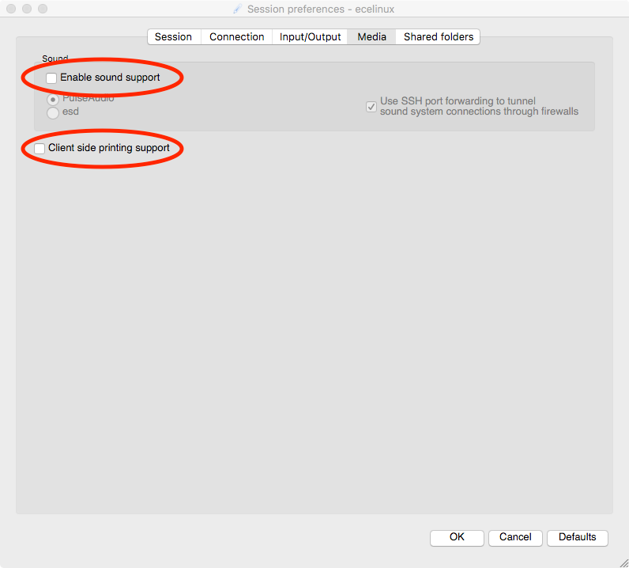
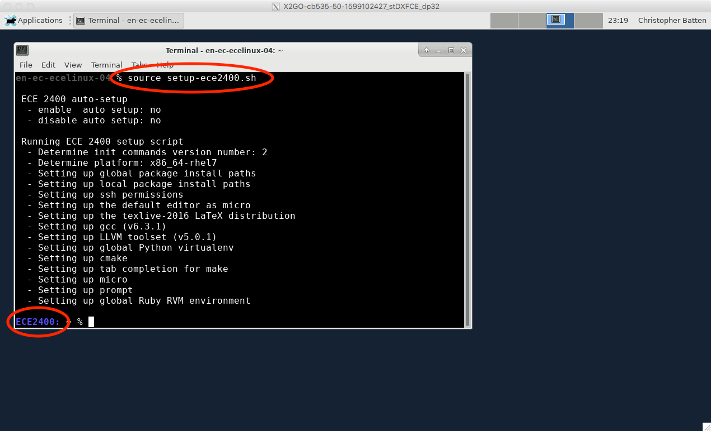
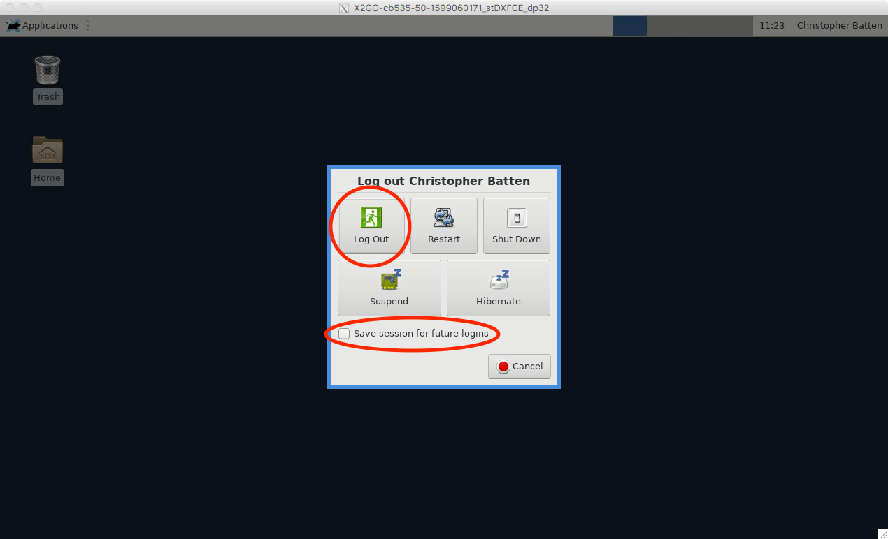

Section 1: Linux Development Environment¶
This section serves as gentle introduction to the basics of using the
Linux development environment on the ecelinux servers including how to
log into the servers, how to work at the Linux command line, and how to
use Git version control.
1. Logging Into ecelinux¶
We will be using the ecelinux servers for all of the programming
assignments. The ecelinux servers all run the Red Hat Enterprise Linux
7 operating system, and they all use an identical setup. Linux is the
operating system of choice for both cloud and IoT systems, so becoming
familiar with Linux will pay dividends beyond just this course.
1.1. For In-Person Students¶
If you are participating in the discussion section in-person in 225 Upson Hall, then all you need to do is find a free workstation and use the following steps:
- log in to the workstation using your NetID and standard NetID password
- double click the X2Go client on the desktop
- setup a new X2go session by configuring the Session and Media tabs
- session name: ecelinux
- host: ecelinux.ece.cornell.edu
- login: cb535
- session type: XFCE
- uncheck enable sound support
- uncheck client side printing support
- click OK
- enter your standard NetID password
- if asked to trust a certificate for the servers, click yes
- if asked about a Windows firewall setup, click cancel


1.2. For Remote Access Students¶
If you are participating in the discussion section remotely, then hopefully you have already gone through the steps in Tutorial 1 of the course:
You need to setup the Cornell VPN and install X2go on your local laptop/workstation. If you haven't done this yet, you need to go ahead and do this now.
1.3. Linux Remote Desktop¶
Once you have started X2go and logged into the ecelinux servers, then
you should see the Linux remote desktop. Note that the Linux remote
desktop is running on the ecelinux server, so anything you do in the
Linux remote deskop is actually happening on the server and not on your
local laptop/workstation.
The next step is to open a new terminal by choosing Applications > Terminal Emulator from the Applications menu in the upper-left corner of the Linux remote desktop. The following screenshot shows a terminal opened on the Linux remote desktop.

1.4. Souce the Course Setup Script¶
The very first thing you need to do after opening a terminal is source the course setup script. This will ensure your environment is setup with everything you need for working on the programming assignments. Enter the following command on the command line:
1 | % source setup-ece2400.sh
|
Note that you do not need to enter % character. In a tutorial like
this, the % simply indicates what you should type at the command line.
You should now see ECE 2400 in your prompt which means your environment
is setup for the course.
It can be tedious to always remember to source the course setup script. You can also use auto setup which will automatically source the course setup for you when you log in. Note that if the environment for ECE 2400 conflicts with the environment required by a different course then you will need to manually source the setup script when you are working on this course. Enter the following command on the command line to use auto setup:
1 | % source setup-ece2400.sh --enable-auto-setup
|
Now close the terminal using the X icon in the upper right-hand corner of
the terminal window. Reopen a new terminal window. You should see ECE
2400 in the prompt meaning your environment is automatically setup for
the course. If at anytime you need to disable auto setup you can use the
following command:
1 | % source setup-ece2400.sh --disable-auto-setup
|
Now that we have source the course setup script we can start to explore the Linux command line.
2. Linux Command Line¶
We will using the ecelinux servers which run the Red Hat Enterprise
Linux 7 operating system for all of the programming assignments. The
heart of the Linux operating system is the Linux command line. This is a
text-based console where you can enter commands to interact with the
operating system.
2.1 Hello World¶
We begin with the ubiquitous "Hello, World" example. To display the
message "Hello, World" we will use the echo command. The echo command
simply "echoes" its input to the console.
1 | % echo "Hello, World" |
The string we provide to the echo command is called a command line
argument. We use command line arguments to tell commands what they
should operate on. Again, note that you do not need to enter %
character.
To-Do On Your Own
Experiment with using the echo command to display different
messages.
2.2. Manual Pages¶
You can learn more about any Linux command by using the man command.
Try using this to learn more about the echo command.
1 | % man echo
|
You can use the up/down keys to scroll the manual one line at a time, the
space bar to scroll down one page at a time, and the q key to quit
viewing the manual.
2.3. Create, View, and List Files¶
We can use the echo command and a feature called command output
redirection to create simple text files. Command output redirection is
discussed more in the full tutorial. Command output redirection uses the
> operator to take the output from one command and "redirect" it to a
file. The following commands will create a new file named
ece2400-sec1.txt that simply contains the text "Computer Systems
Programming".
1 | % echo "Computer Systems Programming" > ece2400-sec1.txt |
We can use the cat command to quickly display the contents of a file.
1 | % cat ece2400-sec1.txt |
For larger files, cat will output the entire file to the console so it
may be hard to read the file as it streams past. We can use the less
command to show one screen-full of text at a time. You can use the
up/down keys to scroll the file one line at a time, the space bar to
scroll down one page at a time, and the q key to quit viewing the file.
1 | % less ece2400-sec1.txt |
The > command output redirection operator will always create a brand
new file (even if the target output file already exists). You can use the
>> operator to append lines to the end of a file. Let's add another
line to our text file using the >> operator.
1 2 | % echo "Using C/C++" >> ece2400-sec1.txt % cat ece2400-sec1.txt |
You can use the ls command to list the filenames of the files you have
created.
1 | % ls |
We can provide command line options to the ls command to modify the
command’s behavior. For example, we can use the -1 (i.e., a dash
followed by the number one) command line option to list one file per
line, and we can we can use the -l (i.e., a dash followed by the letter
l) command line option to provide a longer listing with more information
about each file.
To-Do On Your Own
Create a new file named ece2400-sec1-layer3.txt which contains the
third layer in the computing systems stack (i.e., programming
language). Use cat and less to verify the file contents.
2.4. Create, Change, and List Directories¶
Obviously, having all files in a single location would be hard to manage
effectively. We can use directories (also called folders) to logically
organize our files, just like one can use physical folders to organize
physical pieces of paper. The mechanism for organizing files and
directories is called the file system. When you first login to an
ecelinux machine, you will be in your home directory. This is your own
private space on the server that you can use to work on the programming
assignments and store your files. You can use the pwd command to print
the directory in which you are currently working, which is known as the
current working directory.
1 2 | % pwd
/home/netid
|
You should see output similar to what is shown above, but instead of
netid it should show your actual NetID. The pwd command shows a
directory path. A directory path is a list of nested directory names; it
describes a "path" to get to a specific file or directory. So the above
path indicates that there is a toplevel directory named home that
contains a directory named netid. This is the directory path to your
home directory. As an aside, notice that Linux uses a forward slash (/)
to separate directories, while Windows uses a back slash (\) for the
same purpose.
We can use the mkdir command to make new directories. The following
command will make a new directory named ece2400 within your home
directory.
1 | % mkdir ece2400 |
We can use the cd command to change our current working directory. The
following command will change the current working directory to be the
newly created ece2400 directory, before displaying the current working
directory with the pwd command.
1 2 3 | % cd ece2400 % pwd /home/netid/ece2400 |
Use the mkdir, cd, and pwd commands to make another directory.
1 2 3 4 | % mkdir sec1 % cd sec1 % pwd /home/netid/ece2400/sec1 |
We sometimes say that sec1 is a subdirectory or a child directory of
the ece2400 directory. We might also say that the ece2400 directory
is the parent directory of the sec1 directory. Use the following
command to create a new file in this child directory.
1 2 3 4 | % cd /home/netid/ece2400/sec1 % echo "Computer Systems Programming" > ece2400-sec1.txt % mkdir dirA % ls |
You can use the tree command to visualize the directory layout and
where files are located:
1 2 | % cd ~/ece2400
% tree
|
Note that the tilde character (~) is a shortcut which always refers to
your home directory. There are a few other very useful shortcuts. You can
use a single dot (.) to refer to the current working directory, and you
can use a double dot (..) to refer to the parent directory of the
current working directory.
1 2 3 4 | % cd ~/ece2400/sec1 % cd .. % cd .. % pwd |
To-Do On Your Own
Experiment with creating additional directories and files within the
ece2400/sec1 subdirectory. Try using the tree command to display
your newly created directory hierarchy.
2.5. Copy, Move, and Remove Files and Directories¶
We can use the cp command to copy files. The first argument is the name
of the file you want to copy, and the second argument is the new name to
give to the copy. The following commands will make two copies of the
files we created in the previous section.
1 2 3 4 | % cd ~/ece2400/sec1
% cp ece2400-sec1.txt ece2400-sec1-a.txt
% cp ece2400-sec1.txt ece2400-sec1-b.txt
% ls
|
Instead of copying we can also move a file with the mv command:
1 2 3 | % cd ~/ece2400/sec1
% mv ece2400-sec1.txt ece2400-sec1-c.txt
% ls
|
Finally, we can use the rm command to remove files.
1 2 3 | % cd ~/ece2400/sec1
% ls
% rm ece2400-sec1-a.txt
|
To-Do On Your Own
Creating additional directories and files within the ece2400/sec1
subdirectory, and then use the cp, mv, and rm commands to copy,
move, and remove the newly created directories and files. Use the
ls and tree commands to display your file and directory
organization.
2.6. Text Editors¶
Students are free to use any text editor they want. We recommend using either Micro or Geany. You can start Micro like this:
1 | % micro ece2400-sec1-b.txt |
Micro is a lightweight text-based text editor. Use Ctrl-G to learn more about the keyboard shortcuts you can use to in Micro.
You can start Geany like this:
1 | % geany ece2400-sec1-b.txt &
|
Geany is a graphical-based text editor. Notice the & character at the
end of the command line. This indicates that Linux should run Geany in
the background meaning you can still work at the command line while Geany
is running in a different window.
To-Do On Your Own
Try editing the ece2400-sec1.txt file you created earlier using
either Micro or Geany. Save the file and then view your changes from
the command line using cat.
When you are finished go ahead and delete the sec1 directory to keep
things tidy.
1 | % rm -r ~/ece2400/sec1 |
3. GitHub Account Setup¶
We will be using GitHub for centralized repository hosting. You can check
to see if you have a GitHub account on github.com using this link:
https://github.com/githubid where githubid is your GitHub username on
github.com. If the above link does not work, then you do not have an
GitHub account on github.com. NOTE: We are using github.com not the
Cornell hosted GitHub! You will need to create one here:
Your NetID makes a great GitHub username on github.com. Be sure to use
your Cornell University email address.
Once your account is setup, please make sure you set your full name so we can know who you are on GitHub. Please also consider uploading a profile photo to GitHub; it makes it more fun to interact on GitHub if we all know what each other look like. Go to the following page and enter your first and last name in the Name field, and then consider uploading a profile photo.
Once you have a GitHub ID, please fill out the following online so the instructors know the mapping from NetID to GitHub ID:
Before you can begin using GitHub, you need to create an SSH key pair on
an ecelinux machine and upload the corresponding SSH public key to
GitHub. GitHub uses these keys for authentication. The course setup
script takes care of creating an SSH key pair which you can use. View the
contents of your public key using the following commands:
1 | % cat ~/.ssh/ece2400-github.pub |
Use the following page to upload the public key to GitHub:
Click on New SSH Key, and then cut-and-paste the public key you
displayed using cat into the key textbox. Give the key the title
ece2400-github. Then click Add SSH key. To test things out try the
following command:
1 | % ssh -T git@github.com |
You may see a warning about the authenticity of the host. Don’t worry,
this is supposed to happen the first time you access GitHub using your
new key. Just enter yes. The GitHub server should output some text
including your GitHub ID. Verify that the GitHub ID is correct, and then
you should be all set.
4. Git Version Control System¶
In this course, we will be using Git as our revision control and source code management system. Git will enable us to adopt an agile hardware development methodology so you (and your group) can rapidly collaborate and iterate on the design, verification, and evaluation of the assignments.
4.1. Fork and Clone a Repo from GitHub¶
Fork'ing a repo means making a copy of that repo for your own local use. We won't actually be forking repos for the programming assignments, but it is an easy way for you to grab some example code for the discussion section. Go to the example repo here:
Click on the "Fork" button. Wait a few seconds and then visit the new copy of this repo in your own person GitHub workspace:
https://github.com/githubid/ece2400-sec1
Where githubid is your GitHubID. Now let's clone your new repo to the
ecelinux machine.
1 2 3 4 | % cd ${HOME}/ece2400 % git clone git@github.com:githubid/ece2400-sec1 sec1 % cd sec1 % cat README.md |
Where githubid is your GitHubID.
4.2. Adding and Committing Files to Local Repository¶
Now let's add some new files to the repository. Use your favorite text
editor (e.g., Micro, Geany) to create a file named warm-colors.txt with
three warm colors:
1 2 3 | red orange yellow |
Now use your favorite text editor again to create a file named
cool-colors.txt with three cool colors.
1 2 3 | blue green purple |
Now let's add these files to our repository. First use the git status
command to check on the status of the repository.
1 2 | % cd ${HOME}/ece2400/sec1 % git status |
You should see that git has noticed two "untracked files" which are in the working directory but are not currently being tracked by git. Let's "add" these two files to git's "staging" area so it now knows it should keep track of them:
1 2 3 4 | % cd ${HOME}/ece2400/sec1 % git add warm-colors.txt % git add cool-colors.txt % git status |
The status of these two files have changed. Git reports that both of the new files are ready to be committed. Let's go ahead and commit these changes into your local repository.
1 2 | % cd ${HOME}/ece2400/sec1 % git commit -m "add some colors" |
Let's now use echo and the >> command output redirection operator to
add cyan to the end of our cool-colors.txt file. We can then view our
changes from the command line using cat, and use git status and then
git commit to try and commit our changes.
1 2 3 4 5 | % cd ${HOME}/ece2400/sec1 % echo "cyan" >> cool-colors.txt % cat cool-colors.txt % git status % git commit -m "add cyan" |
Git will report that there are no changes added to the commit. So even
though Git is tracking cool-colors.txt and knows it has changed, we
still must explicitly add the files we want to commit. You definitely
want to avoid using something like git add . to add all files, since
this will inevitably end up adding files that you don't really want to
commit. There is a short cut which uses the -u command line option with
the git add command. This command line option tells Git to add any file
which has changed and was previously added to the repository.
1 2 3 4 5 | % cd ${HOME}/ece2400/sec1 % git status % git add -u % git status % git commit -m "add cyan" |
Now the changes are committed. You can use git log to see a log of the
commits in your local repository.
1 2 | % cd ${HOME}/ece2400/sec1 % git log |
To-Do On Your Own
Try adding maroon to the warm-colors.txt file you created earlier
using either Micro or Geany. View your changes from the command line
using cat. Then use git status, git add, and git commit to
add these changes to local repository.
4.3. Pushing Files to GitHub¶
Note that nothing has happened on GitHub yet. GitHub does not know anything about these local changes. We need to explicitly "push" our new commits up to GitHub like this:
1 2 | % cd ${HOME}/ece2400/sec1 % git push |
Now go to the repository page using the GitHub web interface and verify that there are two new files.
https://github.com/githubid/ece2400-sec1
To-Do On Your Own
Try adding mustard to the warm-colors.txt file you created
earlier using either Micro or Geany. Save the file and then view your
changes from the command line using cat. Then use git status,
git add, and git commit to add these changes to local repository,
and then use git push to push these changes up to GitHub. View the
changes using the GitHub web interface.
4.4. Pulling Files from GitHub¶
Let's try making a change to this repository through the GitHub web interface.
https://github.com/githubid/ece2400-sec1
Click on Create new file. Name the file languages.txt and add a list
of programming languages:
1 2 3 4 5 | C C++ Python MATLAB Java |
Now click Commit new file. Verify that there is a new file in the repo
using the GitHub web interface. Now let's "pull" these new changes from
GitHub to your local repo on ecelinux:
1 2 3 | % cd ${HOME}/ece2400/sec1 % git pull % cat languages.txt |
This will be the basic GitHub workflow were students first use clone to
get a copy of their repository, use add -u and commit to add and
commit their code to the local repository, and then use pull and push
to synchronize their repository with the repository on GitHub.
To-Do On Your Own
Try editing a file using the GitHub web interface. Click on the
warm-colors.txt file and then click on the pencil in the right-hand
corner to edit this text file. Add another warm color. Click Commit
changes. Then pull these changes to the local repository on the
ecelinux server and verify that your new warm color is included.
5. Logging Out of ecelinux¶
When you are finished working on the ecelinux servers you need to
explicitly log out. Choose Applications > Log Out from the
Applications menu in the upper-left corner of the Linux remote
desktop. Make sure Save session for future logins is not checked. Then
click on Log out to cleanly log out from the ecelinux servers.
Obviously, you should save all of you work frequently and before you log
out of the ecelinux servers.
